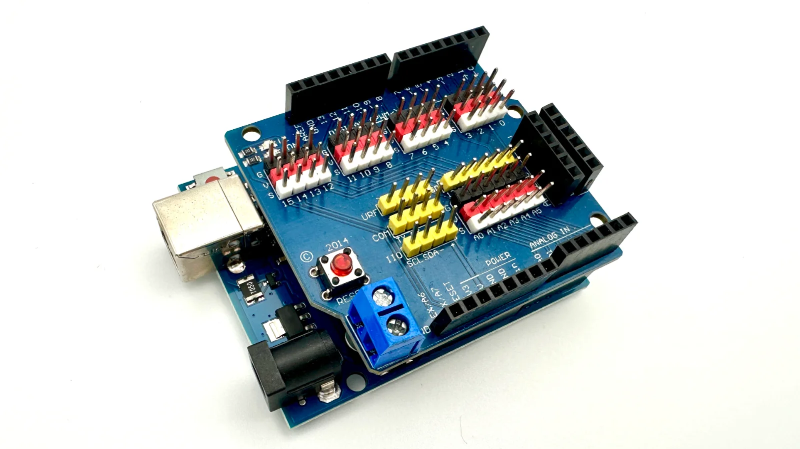
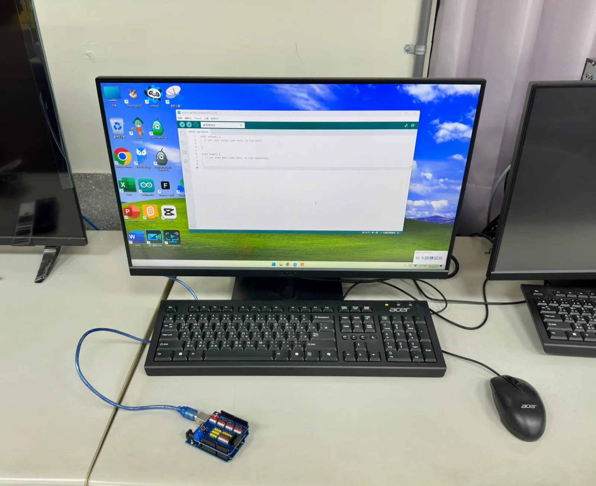
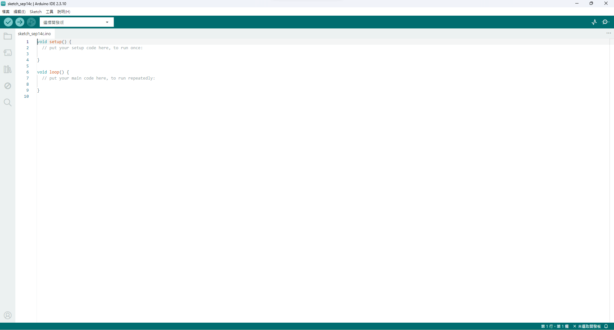
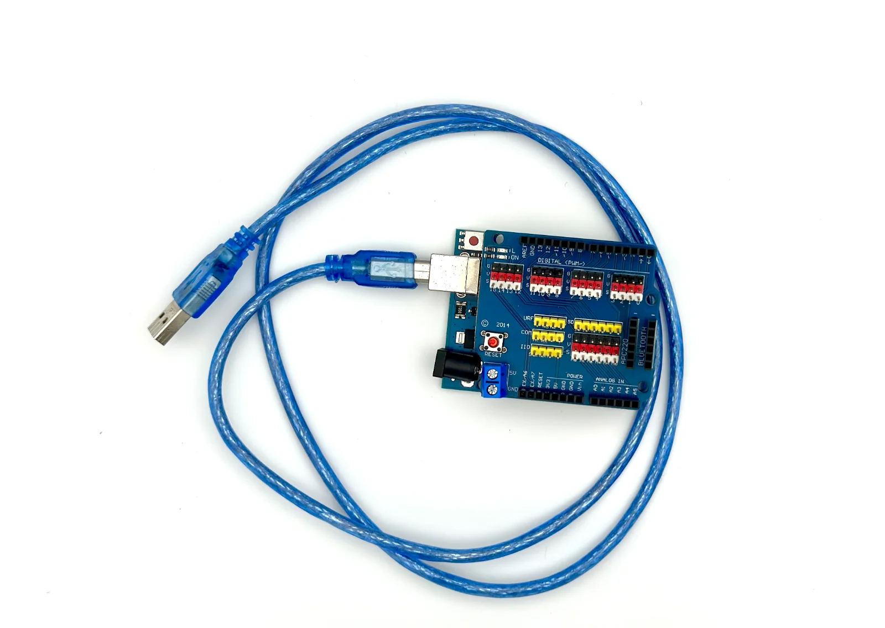
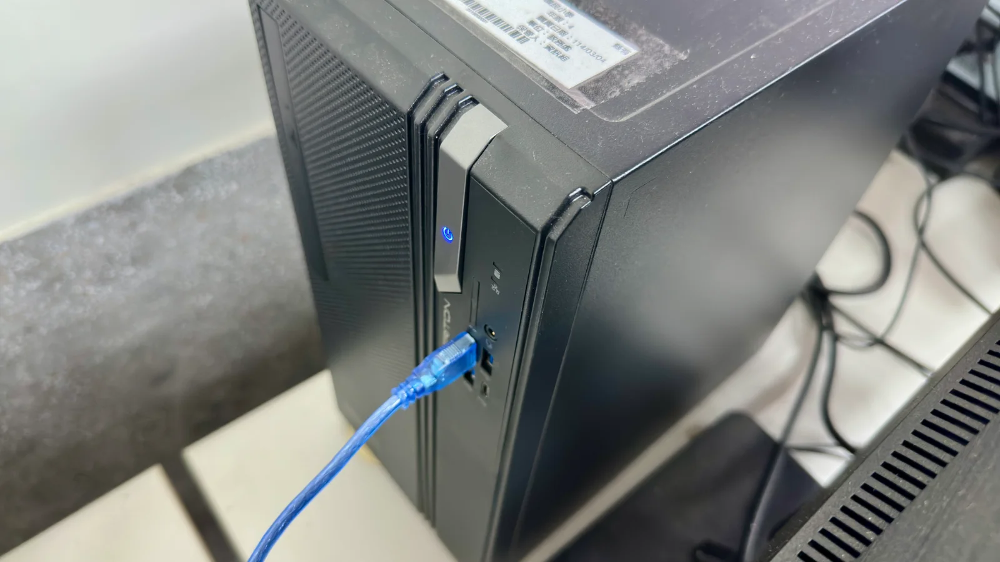
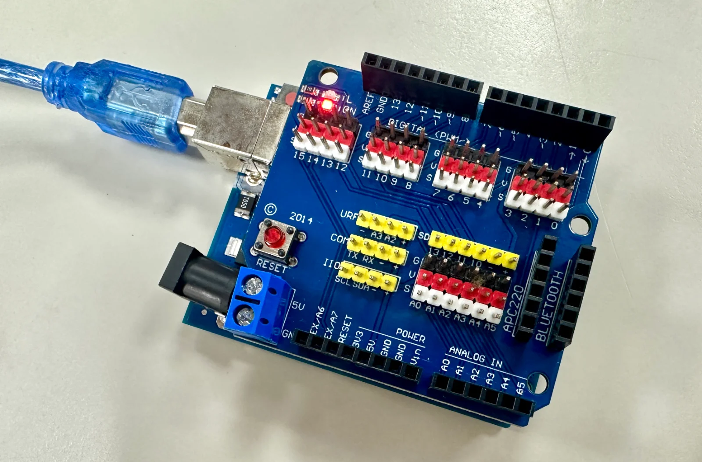
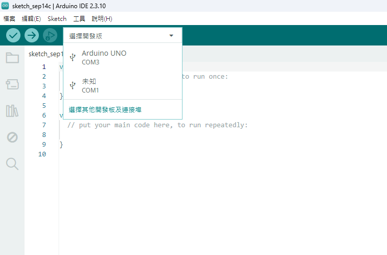

1你手上的兩塊板子
桌上有兩塊板子疊在一起：
💡 兩塊板子分別是什麼
- 下面那塊（Arduino UNO）：真正的「大腦」，你寫的程式會存在這裡，靠它運算。
- 上面那塊（Sensor Shield 擴展板）：把 UNO 的接腳整個複製一份、標好用途，讓你不用直接對著 UNO 密密麻麻的針腳，改成插進標好字的插槽就好。這學期所有零件都插在這塊擴展板上，不會直接碰 UNO。

先不用管擴展板上那些插槽——下一課才會正式教怎麼看。今天只要記得：兩塊板子疊在一起，中間的針腳要對齊插緊，不能歪一邊。
2打開桌面上的 Arduino IDE
IDE 是你等一下要用來寫程式、把程式送進板子裡的軟體，全名是「整合開發環境」，不用背這個詞，知道它是「寫程式用的軟體」就好。
這台電腦已經幫你裝好了，今天不用下載、不用安裝，直接在桌面上找到它打開就好。
✋ 動手做
做完一步，就點一下下面的格子打勾 👇
0 / 3
- 在桌面上找到 Arduino IDE 的圖示（藍綠色、像一個橫躺的 8）
- 連點兩下打開它——第一次打開會等比較久，不要一直點，點太多次會開出好幾個視窗
- 打開後畫面中間應該有一大塊空白區域（等一下要放程式碼）

💡 找不到圖示？
桌面上沒看到的話，按左下角的開始鍵，直接打 arduino 幾個字母，搜尋結果第一個通常就是。還是找不到就舉手，不要自己去網路上下載。
3認識 IDE 畫面上的東西
打開 IDE，你會看到這幾個區域：
中間一大塊空白
程式碼會寫在這裡。今天先不用管裡面寫了什麼。
→ 上傳按鈕
一個圓圈裡有箭頭的按鈕，按下去程式就會送進板子裡。
下面的黑色輸出區
標題寫著「輸出」的那一塊黑色區域。按了上傳之後，成功或失敗的訊息都出現在這裡，失敗的話會有紅色的字。以後排查問題常常要看這裡。
「選擇開發板」下拉選單
上排左邊那個長長的框。要告訴 IDE「我接的是哪一塊板子、插在哪個孔」，就是點這裡，選錯了程式就送不進去。

4把板子接上電腦，讓 IDE 找到它
軟體打開了，但它現在還不知道你的板子在哪裡。上傳之前一定要先做兩件事：把線接上，然後告訴 IDE「我接的是哪一塊板子、插在哪個孔」。這一步沒做好，等一下按上傳一定會失敗。



✋ 動手做
做完一步，就點一下下面的格子打勾 👇
0 / 4
- 用 USB 傳輸線把板子接到電腦，板子上靠近接頭的地方會有一顆紅色的電源燈亮起來（燈亮＝有電，代表線至少有通電）
- 回到 IDE，點上排那個寫著「選擇開發板」的下拉選單
- 選「Arduino UNO」那一個（下面會跟著
COM3之類的編號）。清單裡可能還有一個寫「未知」的，不要選那個 - 選好之後，那個框會變成顯示 Arduino UNO，右下角的「未選取開發板」也會不見——這樣才算連上了

⚠️ USB 傳輸線的一個大坑
有些 USB 線只能充電，不能傳資料（常見於手機的隨附充電線）。用這種線，板子的紅色電源燈還是會亮，但下拉選單裡就是找不到 Arduino UNO——燈亮不代表連得上。遇到這個狀況，先換一條線試試看，這是最常見的原因之一，不是你操作錯。
如果「選擇開發板」點開之後，裡面完全找不到 Arduino UNO，最可能的原因是什麼？
想想板子要「被電腦看到」需要什麼。
5上傳一支現成的程式，什麼都不改
連線確認好了，才輪到上傳。Arduino IDE 內建一支範例程式叫 Blink（閃爍），會讓板子上一顆內建的小燈一直閃。今天的任務只有：打開它、按上傳，不改任何一個字。
✋ 動手做
做完一步，就點一下下面的格子打勾 👇
0 / 4
- 點選單裡的「檔案」→「範例」→「01.Basics」→「Blink」
- 跳出一個新視窗，裡面已經有寫好的程式碼——不用看懂，也不要改
- 新視窗的板子和埠要再確認一次（新視窗有時候會跑掉，跟上一步選的對不對得起來）
- 按上傳按鈕（第二個圓圈裡的→），等下面黑色輸出區跑完
成功的話，板子上會有一顆小燈（通常標著 L）自己一直閃——不用接任何東西，這顆燈是板子本身內建的。
6卡住了？先看這裡
⚠️ 今天最常見的三個狀況
- 下拉選單裡找不到 Arduino UNO —— 換一條 USB 線試試看，很多線只能充電。
- 上傳按下去，黑色輸出區跳出紅字 —— 先看上排的下拉選單是不是顯示 Arduino UNO，這是今天最常見的紅字原因。
- 板子上很多顆燈亮著，但 L 燈沒有閃 —— 板子有通電是好事（代表有電源），但要看清楚哪一顆才是標 L 的那顆，其他燈本來就會一直亮，不是閃的那顆。
- 都試過還是不行，舉手找老師，不要一直重複按上傳。